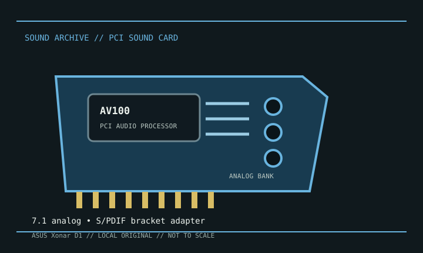

[ INDIVIDUAL MODEL // SOUND HARDWARE ]
ASUS Xonar D1
The Xonar D1 is the conventional-PCI counterpart to the PCI Express Xonar DX. This record covers the D1 card only; D1 and DX drivers, bus requirements, brackets, and manuals are not interchangeable.

Detailed specifications
| Exact model / scope | ASUS Xonar D1 discrete sound card. Verify the model printed on the PCB; do not use the Xonar DX or D2X record as a substitute. |
|---|---|
| Bus / host | Conventional 32-bit PCI; requires a motherboard with a compatible PCI slot. It is not a PCI Express card. |
| Processor / conversion | ASUS AV100 audio processor (CMI8788 family); dedicated multichannel playback and recording conversion. The product documentation specifies up to 24-bit/192 kHz stereo playback and 24-bit/96 kHz multichannel operation. |
| Connectors / I/O | Rear analog 7.1 speaker outputs plus a shared line/microphone input; optical S/PDIF is provided through the model-specific bracket/adapter. Follow the D1 manual for jack routing. |
| Drivers / operating systems | ASUS publishes a D1-specific Windows driver package; legacy releases cover earlier Windows versions and ASUS lists a beta Windows 10 package. Linux support, where available, is community ALSA support, not an ASUS guarantee. |
| Variant / compatibility note | Low-profile installation requires the correct bracket and port mapping. Connector arrangement and bundled S/PDIF adapter should be checked against the card/manual before purchase or service. |
Compatibility & preservation
Retain the D1-specific driver installer and manual with the card. Record the PCB revision and bracket/accessory inventory; verify the exact 7.1 jack map and S/PDIF adapter before reconnecting a multichannel system.
- Photograph the model marking, PCB revision, and all included brackets or cables before service.
- Save the matching driver, manual, and working host configuration; bus fit alone does not establish driver compatibility.
- Use the manufacturer’s model-specific pinout and routing diagram before connecting line, microphone, digital, or multichannel outputs.
Sources & documentation
- ASUS — Xonar D1 downloads and manualsManufacturer support page for D1-specific manuals, drivers, and compatibility notes.
- ASUS Xonar D1 user manualModel-specific manual mirror with installation and connector diagrams.